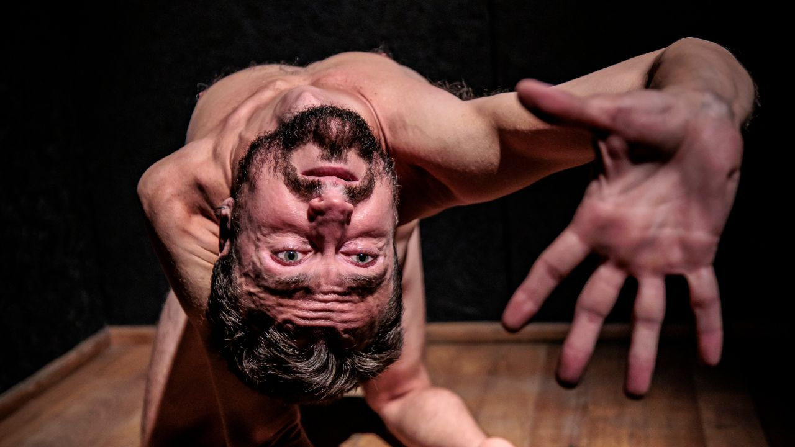

“Sidarta” chega pela primeira vez a São Paulo com Angel Ferreira

Inspirado no livro de Hermann Hesse, solo estreia no Teatro Estúdio em 8 de agosto, em temporada que celebra dois anos do espetáculo
Depois de dois anos de circulação, “Sidarta”, solo criado e interpretado por Angel Ferreira, chega pela primeira vez a São Paulo. A temporada acontece de 8 a 31 de agosto, no Teatro Estúdio, com apresentações aos sábados e domingos, às 17h, e sessões extras às segundas, às 20h.
Livremente inspirado no livro homônimo de Hermann Hesse, o espetáculo acompanha a jornada de um homem em busca de si mesmo. A peça parte da vida e da iluminação de Buda como referência, mas constrói sua narrativa em torno do percurso interno do protagonista, atravessado por dúvidas, descobertas, renúncias e retornos.
Ambientada na Índia no período do Buda histórico, a montagem acompanha Sidarta, filho de um brâmane, que decide deixar a casa dos pais. Ao lado do amigo Govinda, ele se aproxima dos samanas, grupo espiritual que busca a iluminação por meio da mortificação do corpo. Mais tarde, desconfia das doutrinas que encontra, conhece o próprio Buda e também se afasta dele, determinado a encontrar um caminho próprio.
Ao longo da narrativa, Sidarta passa pela vida urbana, pelo desejo, pelo comércio, pelo vício e pelo materialismo. Depois, retorna à simplicidade, em contato com um barqueiro que se revela mestre e amigo. A jornada é construída a partir de movimentos de aprisionamento e libertação, em uma dramaturgia que investiga o conflito entre sucesso e fracasso, prazer e privação, solidão e pertencimento.
“Quando a gente põe em perspectiva o nosso tempo de vida, a efemeridade de tudo, não faz sentido basear a vida numa busca distraída por sucesso, bens, poder”, afirma Angel Ferreira. Para o artista, o trabalho não propõe uma recusa absoluta da vida material, mas uma relação menos obsessiva com ela. “Se libertar do materialismo, para mim, não é sobre abdicar e renunciar à vida material, ao mundo dos objetos e da relação com as coisas. Para mim, é sobre aprender a brincar com elas, mas sem ficar obcecado.”
A criação do espetáculo foi desenvolvida ao longo de cinco anos e combina narrador, personagem e ator em uma montagem minimalista. Angel assina direção, adaptação e atuação, com colaboração na direção de Beth Martins e Renato Livera. A iluminação é de João Gioia e Renato Livera, trabalho indicado ao Prêmio Shell 2025 na categoria Iluminação.
A dimensão física da peça também atravessa o processo do ator. Segundo Angel, o espetáculo exige disciplina corporal e atenção contínua ao corpo. “Como o trabalho é bastante físico, ele me convida a ter uma vida amorosamente disciplinada, com alongamento, fortalecimento, meditação — e, se eu não faço, eu me machuco em cena.”
Além da busca individual do protagonista, “Sidarta” também dialoga com questões contemporâneas, especialmente a relação entre humanidade e natureza. Para Angel, a escuta do rio, elemento central no percurso do personagem, ganha outra dimensão diante do colapso climático e da distância crescente entre vida urbana e mundo natural.
“Quando eu penso que nós vivemos num mundo em colapso climático, no qual o negacionismo encontra força justamente no fato de que deixamos de conviver com as árvores, os bichos, as águas limpas, fazer uma peça que conta a história de uma pessoa que encontra a paz se dedicando a ouvir a voz do rio me encanta”, afirma.
Para Renato Livera, a luz do espetáculo também nasceu de uma escuta coletiva. “‘Sidarta’ é um desses projetos que te chamam para algo a mais do que a criatividade artística puramente dita. É um chamado também espiritual”, comenta. “É uma luz muito simples, mas ela habita e dá lugar à imensidão da história contada.”
Com produção da Mãe Joana Produções, “Sidarta” chega ao Teatro Estúdio em uma temporada de 12 apresentações. Em cena, a travessia do protagonista se aproxima de perguntas que atravessam diferentes tempos: o que sustenta uma vida, o que nos afasta de nós mesmos e que tipo de escuta ainda é possível construir diante do excesso.
Serviço
Sidarta
Direção, adaptação e atuação: Angel Ferreira
Diretores colaboradores: Beth Martins e Renato Livera
Direção de produção: Marcela Casarin
Iluminação: João Gioia e Renato Livera
Produção: Mãe Joana Produções
Temporada: de 8 a 31 de agosto de 2026
Local: Teatro Estúdio
Endereço: Rua Conselheiro Nébias, 891 — Campos Elíseos, São Paulo — SP
Sessões:Sábados e domingos, às 17hSegundas, às 20h
Ingressos: R$ 100 inteira | R$ 50 meia-entrada
Vendas: Sympla
Bilheteria: segunda a sábado, a partir das 17h; domingos, a partir das 15h
Duração: 120 minutos
Capacidade: 112 lugares
Classificação indicativa: 18 anos
Acessibilidade: teatro acessível a cadeirantes e pessoas com mobilidade reduzida
Não é permitida a entrada após o início do espetáculo.